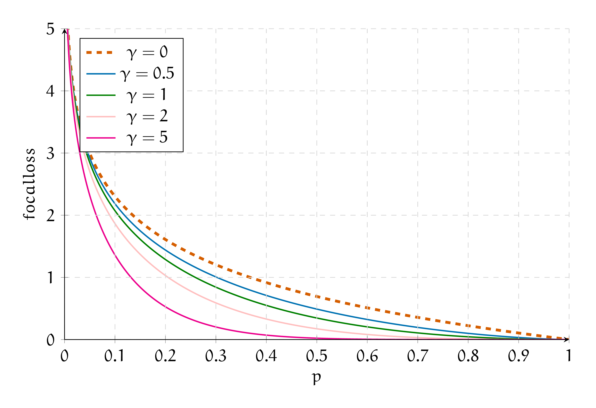

8. Модернизируем logloss
8. Модернизируем logloss#
а) Маша построила для своей выбороки распределение таргета, чтобы понять насколько оно сбалансировано
{kind=link}
Обычно Маша минимизировала такой \(logloss\)
В этот раз Маша решила минимизировать немного модернизированную функцию
Как думаете, зачем Маша сделал это?
Решение
Маша увидела, что в выборке есть серьёзный дисбаланс. Первый класс встречается в три раза реже нулевого. Из-за этого Мааш решила искусственно увеличить значение каждого слагаемого с \(\ln p_i\) для первого класса в три раза.
Если хочется сделать такое в \textbf{sklearn}, можно внутри \textbf{LogisticRegression} поставить \textbf{weighted = ‘balanced’}. Тогда он сам рассчитает насколько велик дисбаланс в тренировочной выборке и увеличит одно из слагаемых.
Если целевой класс встречается редко, наша модель может довольно сильно деградировать и начать везде выдавать нули.
б) Маша прочитала
Маша прочитала в статье про функцию потерь Focal Loss.1 Её обычно используют при решении задачи детекции изображений.
Важной частью всех детекторов изображений является решение задачи классификации для большого количества участков изображения. При этом многие из этих участков (патчей) содержат только фон, то есть преобаладает класс “фон”. Многие из изображений фона легко классифицируются как фон.
То есть возникает много примеров одного из классов, которые при этом и так легко классифицируются моделью. Из-за этого при использовании логистической функции поетрь, мы неэффективно учимся. Введем обозначение
В логистической функции потерь мы находим штраф по формуле
в случае focal loss штраф считается по формуле
Как думаете, за что отвечают параметры \(\alpha\) и \(\gamma\)? Как они помогают решить проблему преобладания класса с фоном?
Решение
Классическую логистическую функцию потерь в задаче бинарной классификации можно записать следующим образом:
Можно записать функцию потерь через \(p_t\) как
В случае, когда \(p_t \gg 0.5\) объект классифицируется правильно, ошибка хоть и мала, но всё ещё ненулевая, а в случае большого количества простых для классификации примеров преобладающий класс может “задавить” более редкий в функции потерь. Модель будет учиться для этих объектов предсказывать всё более близкие к 1 вероятности вместо того, чтобы лучше классифицировать объекты более редкого класса.
Одним из вариантов борьбы с эффектом несбалансированных классов является добавление балансирующего коэффициента. В таком случае \(CE(p_t) = - \alpha_t \ln p_t\), где
Значение \(\alpha \in (0, 1).\) Обычно этот коэффициент пропорционален балансу классов и, таким образом, в функции потерь объекты редкого класса начинают “весить” столько же, сколько и объекты популярного класса.
Однако в этом случае всё ещё “лёгкие” для модели объекты из-за своего количества могут перебивать “сложные” примеры. Можно модифицировать исходную формулу добавлением коэффициента, зависящего от предсказаний:
$\( FL(p_t) = - (1 - p_t)^\gamma \log p_t, \gamma \in [0, 5] \)$.
При \(\gamma = 0\) это всё ещё стандартная логистическая функция потерь, а для других значений получаем, что вес объекта зависит от того, насколько модель уверена в своих предсказаниях. В таком случае при обучении модель будет меньше стремиться “дотюниваться” под популярные и “лёгкие” примеры.
Также можно использовать коэффициент для баланса между классами: \(FL(p_t) = - \alpha_t (1 - p_t)^\gamma \ln p_t\).
На картинке представлен вид focal loss для различных значений параметра \(\gamma\) и логистическая функция потерь (\(\gamma = 0\)). Можно увидеть, что в правой части графика, когда модель уверена в предсказаниях, штраф тем меньше, чем больше \(\gamma\).
{kind=link}